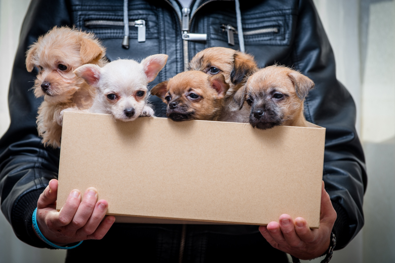
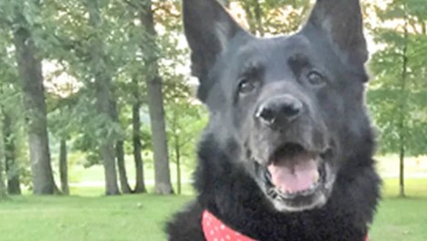
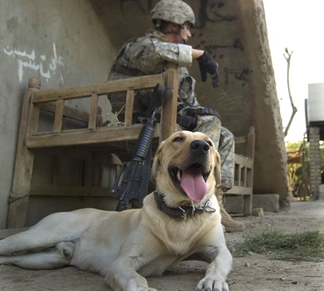

Welcome to BarkBuds, where puppies are your bestfriend
Adopt Your New Best Friend
Featured Dogs
Hero Dog
Meet our Hero Dog of the year. This remarkable dog has shown extraordinary bravery and dedication, saving lives and making a difference in the world.
-

- Hero Dog Name: Adak
- Breed: German Shepherd
- Story: Adak, a German shepherd, served with the U.S. Department of State and with the Army in Iraq and Afghanistan for several years, sniffing out explosives. On Jan. 14, 2008, Adak worked during an active terrorist attack on a Kabul hotel, helping Americans evacuate victims and find terrorists
Working Dog
Learn about the Working Dog of the year. These dogs have excelled in various roles, from search and rescue to therapy.
-

- Working Dog Name: Cooper
- Breed: Labrador Retriever
- Story: 20-year-old Corporal Kory Duane Wiens followed in the footsteps of his grandfather and namesake, a military canine handler during the Korean War, when he became a member of the 94th Mine Dog Detachment, 5th Engineer Battalion, 1st Engineer Brigade, serving in Iraq in 2007. Wiens’ canine comrade was a yellow Lab named Cooper, and they formed a closely bonded team. They worked together to find firearms, ammunition, and explosives. While on patrol in Muhammad Sath, Iraq on July 6th, 2007, Wiens, and Cooper were killed by an improvised explosive device. Their remains were buried together in Wiens’ hometown of Dallas, OR
Companion Dog
Discover heartwarming stories of our Companion Dogs, who provide love, support, and companionship in their unique ways.
- Companion Dog Name: Max
- Breed: Springer Spaniel
- Story: Max, who lives in Keswick in Cumbria, became a social media star after helping his owner, Kerry Irving, recover from a road traffic accident. Unable to walk, Irving developed severe depression. Two years after the crash he met Max, who gave him a reason to walk again and was soon given the mantle Max the Miracle Dog. Irving said: “When I was at my lowest, Max became my reason to live, and he continues to make me smile every day. Being able to share the support, comfort, and joy that Max brings to thousands of people has been a privilege”